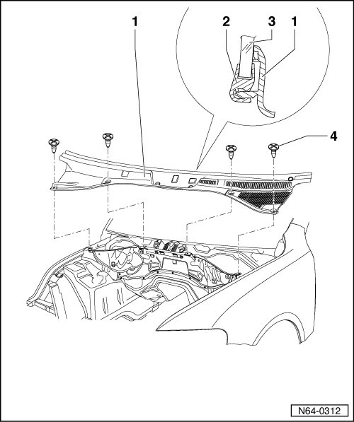
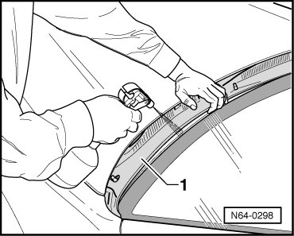
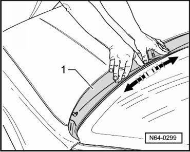
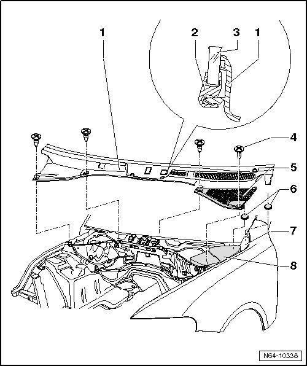

Plenum Chamber Cover
Flush Bonded Windows
Plenum Chamber Cover
Removing

- Remove the windshield wiper arms.
- Open the four rotary fasteners - 4 - for plenum chamber cover.
CAUTION!
Do not pry the plenum chamber cover off with any tools. The window will be damaged and could crack later.
Starting at the edge of the windshield, remove the plenum chamber cover - 1 - at a right angle from the mounting slit on the lower edge of the windshield.
Installation
CAUTION!
Striking the plenum chamber cover can cause cracks in the windshield.
- When installing the plenum chamber cover in the mounting slit - 1 -, spray the area with soapy water to make the process easier.

- Press plenum chamber cover - 1 - into mounting slit, starting from center in - direction of arrow -.

Afterwards, fasten plenum chamber cover in center and outer areas using rotary fasteners.

- Make sure the rubber buffer - 5 - fits securely on the fuse panel cover - 8 - and on the bar on the fender - 7 -.
• The rubber buffer lifts the plenum chamber cover slightly so that it does not touch the wiper linkage.